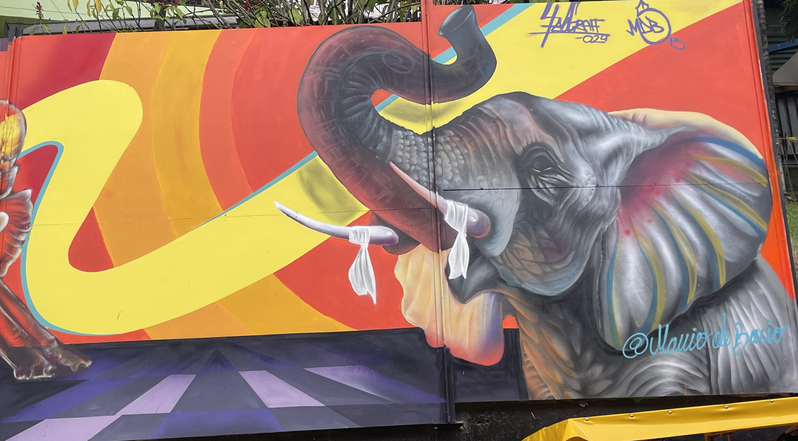
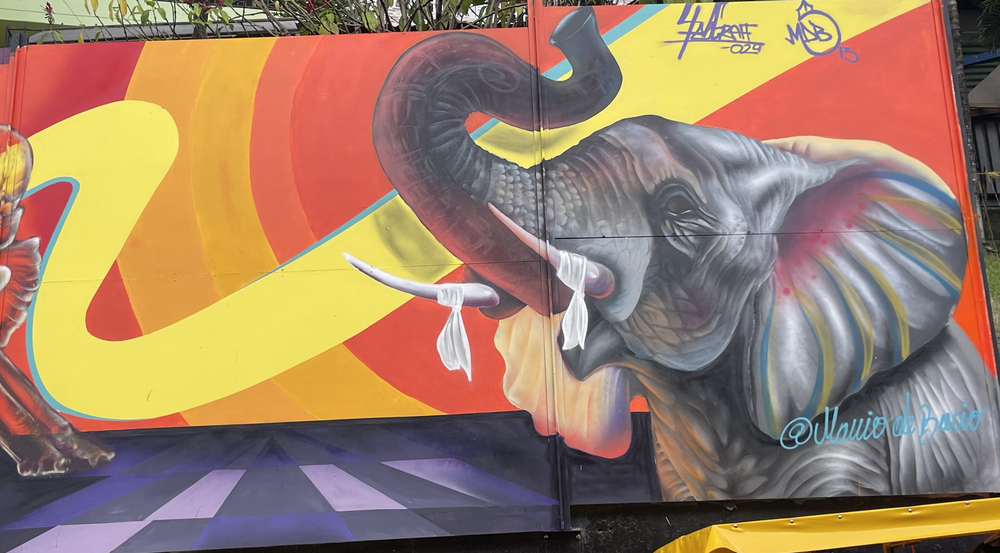
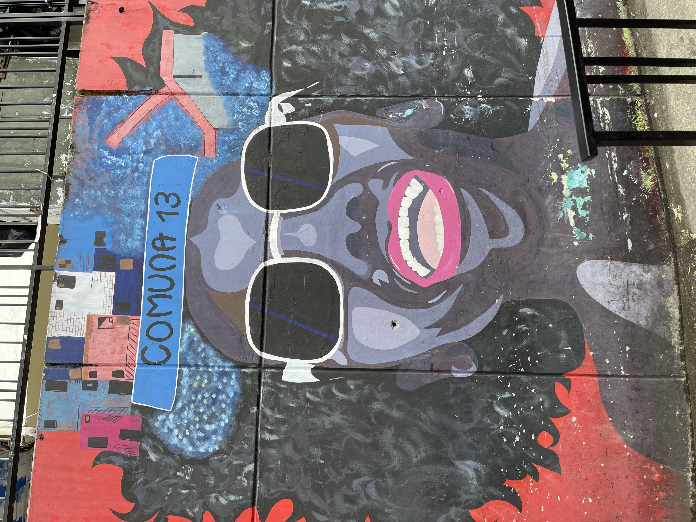
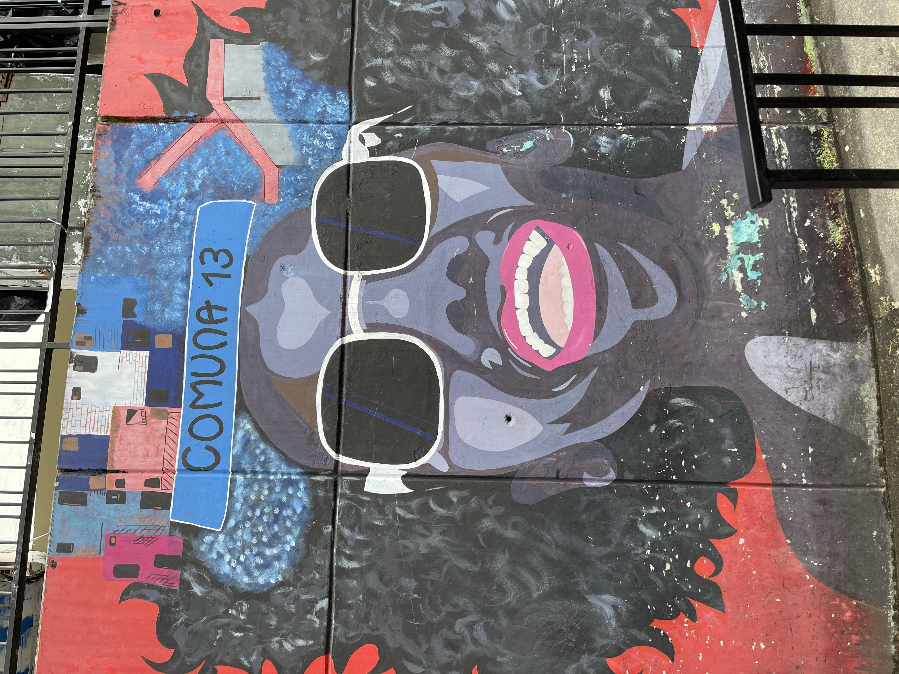

Graffitour Comuna 14
El Graffitour es un recorrido único por uno de los sectores más emblemáticos de Medellín, donde la historia, el arte y la transformación social se encuentran. A lo largo del tour, podrás admirar espectaculares vistas, expresiones artísticas en murales vibrantes y las famosas escaleras eléctricas que conectan las montañas de la ciudad.
Información:
El Graffi tour tiene una duración de 2 horas.
Horarios:
viernes, sábados y domingos
10:00 A.M. y 04:00 P.M.
¿Qué incluye?
Guías
Historias
Escaleras eléctricas
Expresiones artísticas
Ubicación
Cra. 113 #34CC - 140
Graffi tour - San Javier -
Medellín Colombia
Símbolo de dolor, resistencia y renacer
En este sitio podrás conocer las coloridas calles del graffi tour. Aquí descubrirás detalle a detalle este hermoso lugar lleno de arte y mucha cultura. Cada muro lleno de arte y cada uno dando una enseñanza de vida y detrás de ella una historia de resiliencia.
Aquí, recopilarás y se relatarán historias de vida de los residentes de la Comuna 13 que describan el proceso de mutación social, prestando atención a casos personales de resiliencia, cambio y superación.

 

 
